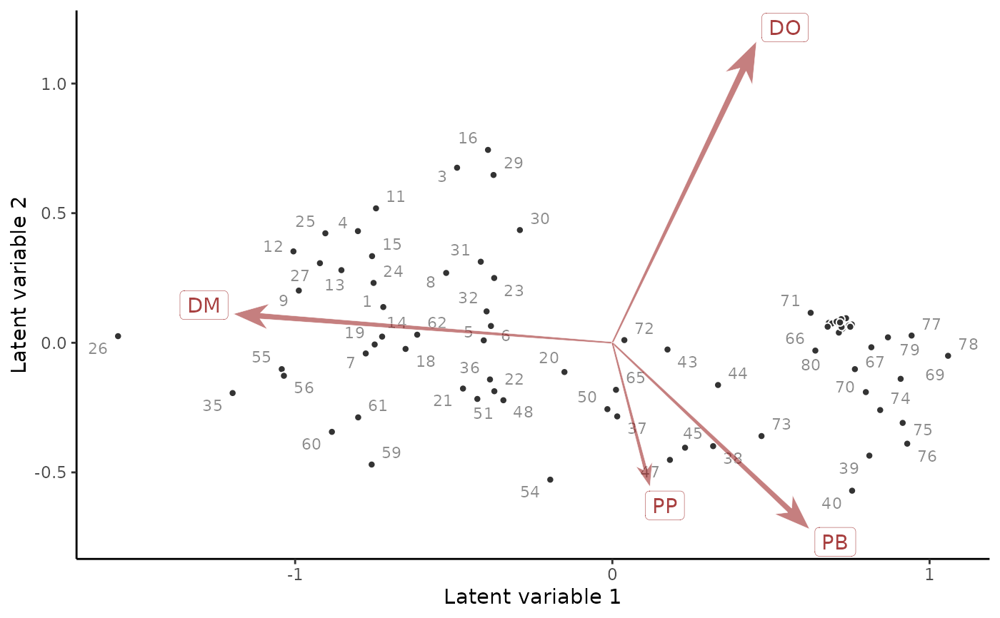

Plot an ordination of latent variables and their factor loadings from
jsdgam models
Usage
ordinate(object, ...)
# S3 method for jsdgam
ordinate(
object,
which_lvs = c(1, 2),
biplot = TRUE,
alpha = 0.5,
label_sites = TRUE,
...
)Arguments
- object
listobject of classjsdgamresulting from a call tojsdgam()- ...
ignored
- which_lvs
A
vectorof indices indicating the two latent variables to be plotted (if number of the latent variables specified in the model was more than 2). Defaults toc(1, 2)- biplot
Logical. IfTRUE, both the site and the species scores will be plotted, with names for the taxa interpreted based on thespeciesargument in the original call tojsdgam(). IfFALSE, only the site scores will be plotted- alpha
A proportional numeric scalar between
0and1that controls the relative scaling of the latent variables and their loading coefficients- label_sites
Logicalflag. IfTRUE, site scores will be plotted as labels using names based on theunitargument in the original call tojsdgam(). IfFALSE, site scores will be shown as points only
Details
This function constructs a two-dimensional scatterplot in ordination space.
The chosen latent variables are first re-rotated using singular value
decomposition, so that the first plotted latent variable does not have to
be the first latent variable that was estimated in the original model.
Posterior median estimates of the variables and the species' loadings on
these variables are then used to construct the resulting plot. Some attempt
at de-cluttering the resulting plot is made by using geom_label_repel()
and geom_text_repel from the ggrepel package, but if there are many
sites and/or species then some labels may be removed automatically. Note
that you can typically get better, more readable plot layouts if you also
have the ggarrow and ggpp packages installed
Examples
# \donttest{
# Fit a JSDGAM to the portal_data captures
mod <- jsdgam(
formula = captures ~
# Fixed effects of NDVI and mintemp, row effect as a GP of time
ndvi_ma12:series + mintemp:series + gp(time, k = 15),
factor_formula = ~ -1,
data = portal_data,
unit = time,
species = series,
family = poisson(),
n_lv = 2,
silent = 2,
chains = 2
)
# Plot a residual ordination biplot
ordinate(
mod,
alpha = 0.7
)
#> Warning: ggrepel: 17 unlabeled data points (too many overlaps). Consider increasing max.overlaps

# Compare to a residual correlation plot
plot(
residual_cor(mod)
)
# }